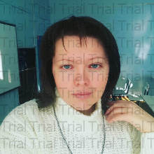

Токина Надежда Ивановна,
преподаватель информатики и истории
Красноармейской ООШ, пс.Суходольного
- 1)обобщение, систематизация и распространение инновационного опыта собственной педагогической деятельности;
- 2)обеспечение высокого качества организации образовательного процесса на основе эффективного использования современных образовательных технологий, в том числе информационно-коммуникационных, с целью развития ИКТ-компетентности учащихся нашего профессионального лицея;
- 3)систематизация образовательных результатов учащихся в проектно-исследовательской межпредметной и профессионально направленной деятельности по предмету "Информатика и ИКТ" и не только;
- 4)содействие в освоении (и усвоении) учащимися нашего профессионального лицея основных компетенций (ОК и ПК) и развитии их способностей к профессиональному росту и профессиональной мобильности в условиях информатизации общества, в соответствии с новыми ФГОС.
Образование высшее, в 2002 году с отличием окончила исторический Южного Федерального Университета (ЮФУ). Специальность - "программирование", квалификация - "Программист. Преподаватель. Учитель информатики".
Общий стаж педагогической работы – 16 год, в системе НПО работаю с 1996 года.
В настоящее время являюсь преподавателем высшей квалификационной категории.
Преподаю информатику в 5-9 классах общеобразовательной школы. Реализую программу профильного обучения в соответствии с новыми ФГОС.
- 2003-2020- Красноармейская ООШ (учитель информатики).
За время работы прошла обучение на следующих курсах повышения квалификации:
- 2004 г. - "Методика и программное обеспечение школьного курса информатики".
- 2008 г. - "Актуальные вопросы теории и методики преподавания информатики" .
- 2008-2009 гг. - "Подготовка к ЕГЭ по информатике и ИКТ".
- 2013 г. - прошла обучение по теме "Технология проведения экзаменов
в ППЭ" . - 2013 г. - "Преподавание информатики в условиях внедрения ФГОС общего образования" .